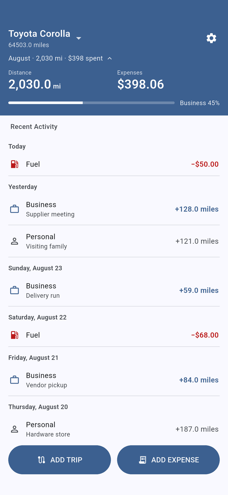
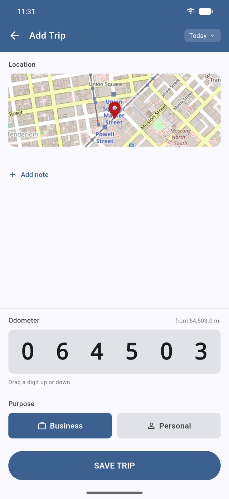
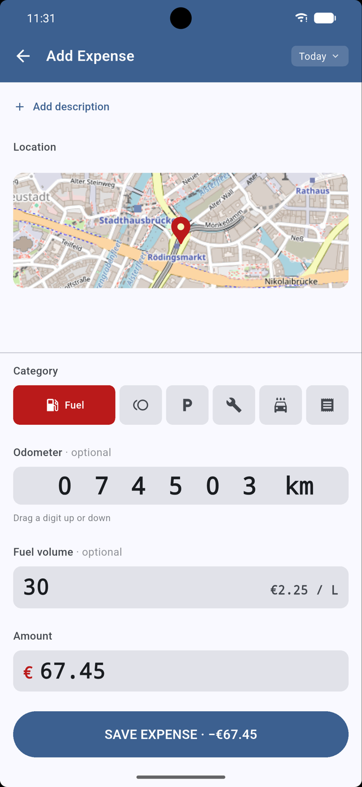
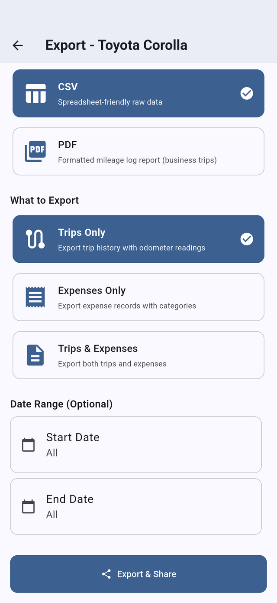
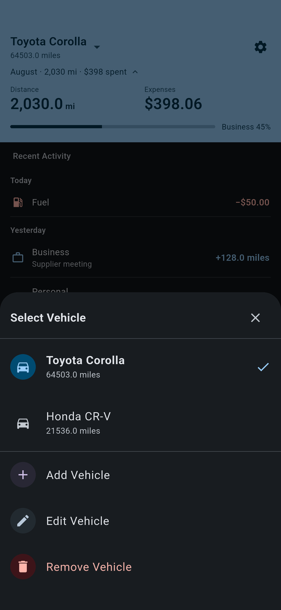
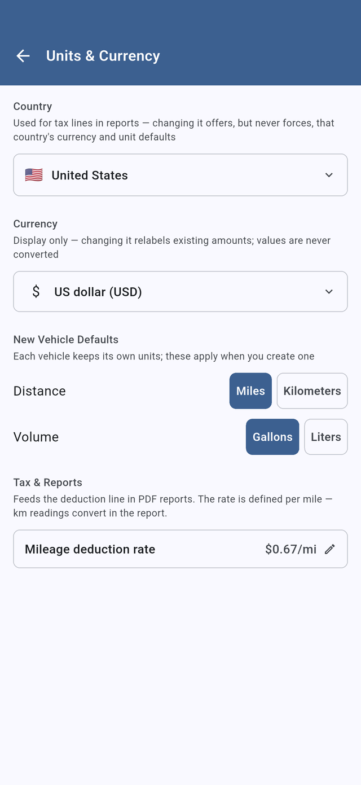

Odometer Simple mileage tracker app
Paper simplicity, app organization. Type your odometer reading, tag the trip, and export a clean log when the tax year ends.
Free • No ads • No account • No subscription






- Free, no ads
- No account
- No background GPS
- Works offline
- CSV & PDF export
What the Odometer mileage log app does
A mileage log that works the way the paper one in your glovebox did — you write down the number, and it adds up. Odometer just keeps the arithmetic, the sorting and the export honest.
There is no automatic trip detection, because automatic trip detection is the part that drains the battery, logs the school run as a client visit, and leaves you deleting phantom trips on April 14th.
- Log trips with odometer readings — distance calculates itself
- Tag every trip business or personal in one tap
- Track fuel, tolls, parking, maintenance and car washes
- Optional GPS location snapshots — one reading, not a trail
- Export to CSV or PDF whenever you need the paperwork
Everything in the glovebox, organized
Small app, but it does not cut the corners that matter at tax time.
Multiple vehicles
Each vehicle keeps its own odometer, its own history, and its own units — miles and gallons on one, kilometers and liters on the next.
Reports that pass review
CSV with ISO dates and summaries, filtered to any date range. PDF mileage reports with a deduction line at the rate you set.
Bring your old log
Import a CSV when you add a vehicle, with overrides for units and for MM/DD versus DD/MM dates. You see a validated preview before anything saves.
Backdating that adds up
Log a drive from last Tuesday and Odometer prefills the odometer the car actually had that day — and refuses entries that would run the mileage backwards.
Works with no signal
No sign-in, no server call in the logging flow. Underground parking garage, rural route, airplane mode — it behaves the same.
Made to live in
Five Material themes, a roller-style odometer input with three gesture modes, and 50+ currencies. Set it once and forget the settings screen exists.
Three numbers. That's the whole job.
No setup wizard, no linked bank account, no waiting for a trip to be detected.
-
Add your vehicle
One question — where do you drive? That sets your currency and units, and every part of it is overridable. Or import a CSV and start with your history intact.
-
Log the reading
Type the start and end odometer, tap business or personal, add a note if it matters. Fuel and other costs go in the same way, under a category.
-
Export when asked
Pick a date range, get a CSV or a PDF with the deduction already worked out at your rate. Hand it to your accountant, or attach it to an expense claim.
Who keeps a mileage log?
Anyone who drives for work and has to prove it later. Odometer was built for the people who already keep a notebook in the door pocket:
- Delivery and courier drivers
- Rideshare drivers
- Realtors and field sales
- Trades and mobile service techs
- Contractors and freelancers
- Anyone claiming mileage reimbursement
Not sure a manual log is the right shape for you? Read why a mileage tracker without GPS beats automatic tracking, or start with what a mileage log for taxes has to contain.
Privacy First
All data stays on your device
No account required
No cloud sync
The long version is in the privacy policy.
Questions before you install
The things people ask us most often about Odometer.
Is Odometer free?
Yes. Odometer is free on Google Play, with no ads and no subscription. The iPhone version is on its way to the App Store.
Does Odometer track my drives automatically in the background?
No, and that is deliberate. There is no automatic trip detection and nothing runs in the background. You type your start and end odometer readings and Odometer does the arithmetic. Nothing drains your battery between trips, and there are no phantom trips to delete later.
Where is my data stored?
In a database on your phone, and nowhere else. Odometer has no server and no cloud sync, so your trips, expenses and vehicles never leave the device unless you export them yourself.
Can I export my mileage log for taxes or reimbursement?
Yes. Odometer exports CSV with ISO dates and summaries, filtered to any date range you pick, and generates PDF mileage reports with a deduction line calculated at the mileage rate you set.
Can I track more than one vehicle?
Yes. Each vehicle keeps its own odometer, its own history, and its own distance and volume units, so a car logged in miles and gallons can sit alongside one logged in kilometers and liters.
Does Odometer work offline?
Entirely. There is no sign-in and no network call in the logging flow, so it works in a parking garage, on a rural route, or in airplane mode.
Can I import a mileage log I already keep?
Yes. When you add a vehicle you can import a CSV, with overrides for units and for date format so a MM/DD file and a DD/MM file both land correctly. Odometer shows you a validated preview before anything is saved.
Is there an iPhone version?
Almost. Odometer is on Google Play now, and the iPhone version is being published to the App Store. Your data stays on whichever phone you use — there is no account and no sync between them.
Get Odometer
Free on Android now, coming to iPhone. No ads, no account, no subscription — and your log never leaves your phone.
Have a question first? Read the FAQ or contact support.